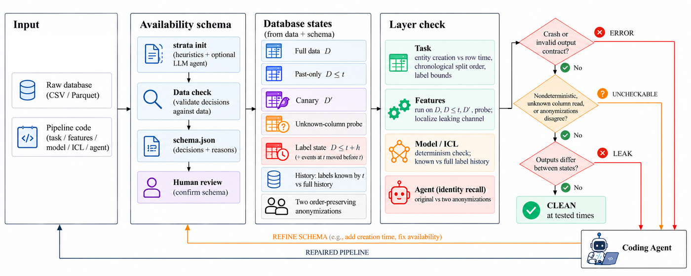

Your ML pipeline may be peeking at the future. STRATA shows you where.
A checker for pipelines over time-stamped relational data, made for code that coding agents write. It runs your code on the data as it is and on the data as it was at prediction time, and tells you where the two disagree.
Open the demo a workbench with recorded runs on real data, runs in the browser
What is a point-in-time leak?
You train a model to predict what happens to a customer, a product or a driver after a date t. Everything the model sees for that prediction must have been known at t. A review written a week later, a delivery date filled in afterwards, an order status overwritten at the end of the data, a training row whose outcome came after t: each one inflates the offline score, and production never reaches it.
See it on one product
One Olist product, its orders and the reviews of those orders. A feature program that counts reviews of past orders without checking when each review was written also counts reviews from after t. Drag t to see when that happens.
| Feature | Full | As of t |
|---|
Why coding agents make it worse
An agent writes the whole pipeline, often over a database nobody has annotated. The code runs, the tests pass, the metric is high. The leak can sit in any of five places, and a check of one place passes a pipeline that leaks in another. In our corpus, scripts that cut their features correctly still trained on outcomes from the future.
Where the future gets in
| Layer | What can go wrong | Command |
|---|---|---|
| task | rows for entities that do not exist yet; labels used before they are complete | strata check task |
| features | rows created after t; dates filled in later; values overwritten at the end of the data | strata check features |
| model | training rows whose outcome was unknown at t | strata check model |
| in-context | few-shot examples for an LLM taken from after t | strata check icl |
| agent | a model that knows an entity from outside the data | strata check agent |
One rule for all five
STRATA never reads the code. It runs each layer twice, on the full database and on the database as it was at t, with later rows removed and later values blanked, and compares the outputs. A difference is a LEAK, with a witness: the time, the entity, the column and the channel that carried the future. No difference at the tested times is CLEAN. If the output depends on a column whose availability nobody knows, the verdict is UNCHECKABLE.
What it needs from you
One short file per database, the availability schema: for each table, when a row appears and which values arrive later. strata init drafts it from the raw CSV or Parquet files. With --llm, a language model proposes each decision with a reason, STRATA checks every decision against the data, and the open questions go to the person who knows the data. You review the draft once.
pip install -e .
strata init --data path/to/csvs --out schema.json
strata check features --schema schema.json --program feats.py:get_features --entity productHow a coding agent uses it
Every check is one command with exit code 0, 1, 2 or 3 for CLEAN, LEAK, UNCHECKABLE or ERROR, and a JSON report. The agent loads SKILL.md, which says which check to call for which layer, how to read a witness, and that only a rerun may declare a leak fixed. Code under test runs in a child process with a timeout, a memory limit and no API keys in the environment.
Results
| Test | Outcome |
|---|---|
| PITBencheight databases, 98 hand-labelled changes to a reference pipeline | all 43 leaking changes caught, none of the 55 harmless ones flagged |
| The usual shortcutcut the rows at t and compare | finds fewer than half of the leaking programs: it cannot see a value filled in later or a status overwritten at the end of the data |
| Olist134 feature programs written by code models | 16 leaks that a hand-written checker for Olist had passed, all through delivery dates filled in after t |
| RelBench27 training scripts written by a coding agent | all 27 learn from rows after t; in 10 of them the metric did not even rise |
| Schema draftingthe eight databases, from the raw files alone | names and dates are enough for row times and late dates; columns overwritten at the end of the data need the language model: rules found 5 of 50, the model all 50 |
What came before
PITFALL studied this leakage in generated feature code on one database with a handwritten oracle. PITBench brought eight databases to one contract: an availability map, control programs with known verdicts and a reference pipeline each. STRATA is the checker that works on all of them, and on a database it has never seen, from a schema alone.
Pavel Marian, Stanislav Chumakov, Danil Ezhov, Alexander Boukhanovsky. AI Institute, ITMO University.
STRATA 0.1.0, Python and pandas, 38 tests. ICSE 2027 Tool Demonstration and Data Showcase.